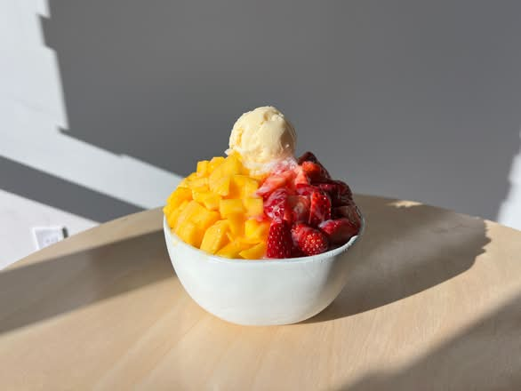

01 / SOMETHING SWEET
Half & Half Bingsoo
Mango and strawberries over milk snow, finished with vanilla ice cream.
BINGSOO. BOBA. A GOOD EXCUSE TO MEET.
Fruit-topped milk snow, matcha lattes, and a little Korean street food. Find your next favorite on Truxel Road.
Find your favoriteNatomas, Sacramento

SAVE US A SPOT IN YOUR PLANS
3581 Truxel Road, Suite 1
Sacramento, CA 95834
Listed café hours. Call to confirm before a late visit; delivery ordering may end earlier.